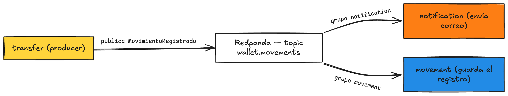

Fase 7 · Consumir el evento¶
Rama: fase-7 = main
Lo que vas a lograr: consumir el evento MovimientoRegistrado desde dos lados a la vez. notification avisa, movement guarda, cada uno en su propio grupo, sin que transfer sepa que existen. Acá se ve, en vivo, por qué los eventos valen la pena.
Parte 1 — Configurar el consumidor¶
Súmale al application.yaml el lado consumidor. El productor mandaba JSON; el consumidor lo reconstruye.
spring:
kafka:
consumer:
key-deserializer: org.apache.kafka.common.serialization.StringDeserializer
value-deserializer: org.springframework.kafka.support.serializer.JsonDeserializer
auto-offset-reset: earliest
properties:
spring.json.trusted.packages: "com.baqjug.wallet.*"
Concepto al paso: trusted.packages y por qué existe
Deserializar JSON a un objeto Kotlin significa crear una clase a partir de datos que llegaron de afuera. Eso, sin control, es un riesgo de seguridad. trusted.packages es una lista blanca: solo se permite reconstruir clases de esos paquetes. Le decimos que confíe en las nuestras (com.baqjug.wallet.*).
Concepto al paso: auto-offset-reset=earliest
Cuando un grupo llega por primera vez a un topic y no tiene una marca previa (offset), ¿desde dónde lee? Con earliest, desde el principio del log. Con latest, solo lo nuevo. En el taller usamos earliest para que un consumidor que enciendes después alcance a ver los eventos que ya publicaste.
Parte 2 — Levantar Mailpit y configurar el correo¶
notification va a mandar un correo de verdad cuando llegue un movimiento. Pero mandar correos reales en un taller es mala idea (spam, credenciales, rebotes). La solución: Mailpit, un servidor de correo falso que atrapa todo lo que la app manda y te lo muestra en el navegador.
Concepto al paso: SMTP y Mailpit
SMTP es el protocolo con el que las apps entregan correos a un servidor de correo. Mailpit es un servidor SMTP falso: tu app le entrega los correos como si fuera uno real, pero en vez de mandarlos a internet, Mailpit los atrapa y te los muestra en una página web. Ves el correo salir, sin que le llegue a nadie.
Levántalo con Docker (un solo comando):
El puerto 1025 es el SMTP (por ahí le entrega tu app); el 8025 es la UI web, en http://localhost:8025, donde ves los correos.
Agrega la dependencia de correo de Spring:
Y la configuración del correo, con valores por variable de entorno para poder cambiarlos en producción sin tocar el código:
spring:
mail:
host: ${SMTP_HOST:localhost}
port: ${SMTP_PORT:1025}
username: ${SMTP_USER:}
password: ${SMTP_PASSWORD:}
properties:
mail.smtp.auth: false
mail.smtp.starttls.enable: false
Los : con valor por defecto
${SMTP_HOST:localhost} significa "usa la variable SMTP_HOST, y si no existe, localhost". Así en tu máquina apunta solo a Mailpit sin configurar nada, y en la nube (Fase 10) le pones las variables de un proveedor real.
Parte 3 — El consumidor que notifica (por correo)¶
Primera feature nueva: notification. Escucha el evento y le manda un correo al dueño de la cuenta que recibió la plata. Para eso necesita su email, y se lo pide a la feature account con el AccountService que ya tienes.
package com.baqjug.wallet.notification.domain
import com.baqjug.wallet.account.domain.AccountService
import com.baqjug.wallet.movement.domain.MovimientoRegistrado
import org.springframework.mail.SimpleMailMessage
import org.springframework.mail.javamail.JavaMailSender
import org.springframework.stereotype.Component
@Component
class EmailNotifier(
private val accountService: AccountService,
private val mailSender: JavaMailSender
) {
fun notificar(evento: MovimientoRegistrado) {
val destino = accountService.getById(evento.toId) // la cuenta destino, con su email
val mensaje = SimpleMailMessage().apply {
from = "wallet@baqjug.com"
setTo(destino.email)
subject = "Recibiste un movimiento en tu wallet"
text = "Hola ${destino.owner}, recibiste ${evento.amount} en tu cuenta."
}
mailSender.send(mensaje)
}
}
Spring al paso: JavaMailSender
JavaMailSender es la herramienta de Spring para mandar correos. La autoconfigura Boot con las propiedades spring.mail.* que pusiste; tú solo la inyectas. SimpleMailMessage es un correo de texto plano: remitente, destinatario, asunto y cuerpo. Para HTML o adjuntos usarías MimeMessage, pero para un aviso nos sobra con esto.
notification lee de account, y está bien
Para saber a qué correo escribir, notification le pide la cuenta a AccountService. Eso es una lectura entre features, y no rompe el desacople: lo que nos importaba era que transfer no conociera a sus consumidores. Que un consumidor consulte datos de otra feature es normal y esperable.
Y el listener, que solo recibe el evento y delega:
package com.baqjug.wallet.notification.messaging
import com.baqjug.wallet.movement.domain.MovimientoRegistrado
import com.baqjug.wallet.notification.domain.EmailNotifier
import org.springframework.kafka.annotation.KafkaListener
import org.springframework.stereotype.Component
@Component
class MovimientoNotificationListener(
private val emailNotifier: EmailNotifier
) {
@KafkaListener(topics = ["wallet.movements"], groupId = "notification")
fun onMovimiento(evento: MovimientoRegistrado) {
emailNotifier.notificar(evento)
}
}
Spring al paso: @KafkaListener
@KafkaListener convierte un método en consumidor. topics dice qué escuchar, groupId a qué grupo pertenece. Spring se suscribe al arrancar, y cada vez que llega un evento, llama tu método con el objeto ya deserializado. Tú solo escribes qué hacer con él.
Parte 4 — El consumidor que guarda¶
Acá está lo interesante. En la Fase 4, movement guardaba porque transfer lo llamaba. Ahora movement guarda porque escucha el evento, en su propio grupo. Reusa el MovementService que ya tenías.
package com.baqjug.wallet.movement.messaging
import com.baqjug.wallet.movement.domain.MovementService
import com.baqjug.wallet.movement.domain.MovimientoRegistrado
import org.springframework.kafka.annotation.KafkaListener
import org.springframework.stereotype.Component
@Component
class MovimientoPersistenceListener(
private val movementService: MovementService
) {
@KafkaListener(topics = ["wallet.movements"], groupId = "movement")
fun onMovimiento(evento: MovimientoRegistrado) {
movementService.record(evento.fromId, evento.toId, evento.amount)
}
}
Grupos distintos: los dos reciben cada evento
Fíjate: notification está en el grupo notification y movement en el grupo movement. Como son grupos distintos, cada uno recibe una copia de cada evento. Una sola transferencia dispara un aviso y un registro, en paralelo, sin que se pisen. Si ambos estuvieran en el mismo grupo, el broker le daría el evento a uno solo. Esa diferencia es el corazón del pub/sub.

Un consumidor nuevo no toca a transfer
Este es el pago de todo el trabajo. Agregaste dos consumidores y no tocaste una línea de transfer. Mañana quieres antifraude: creas otro @KafkaListener con su grupo y listo. transfer ni se entera. Compara eso con la rama Success de la Fase 4, donde cada cosa nueva era editar y redesplegar transfer.
Parte 5 — Verlo funcionar¶
Con Mailpit corriendo, arranca la app y haz una transferencia:
curl -X POST http://localhost:8080/api/transfers \
-H "Content-Type: application/json" \
-d '{
"fromId": "11111111-1111-1111-1111-111111111111",
"toId": "22222222-2222-2222-2222-222222222222",
"amount": 15000.00
}'
Ahora abre http://localhost:8025: ahí está el correo que mandó notification, atrapado por Mailpit, dirigido a geovanny@example.com (el dueño de la cuenta destino). Y en Supabase, la tabla movements tiene una fila nueva, guardada por el listener de movement. Un evento, dos consumidores, cero acople con transfer.
Ojo con procesar el mismo evento dos veces
Si el broker reentrega un evento (pasa: reinicios, rebalanceos), el listener de movement podría guardar el movimiento dos veces. Hoy no lo evitamos. Cómo hacer que consumir el mismo evento varias veces no rompa nada, eso es idempotencia, y lo vemos en la Fase 8.
Cierre de la fase¶
./gradlew test
git add .
git commit -m "fase-7: notification y movement consumen el evento en grupos separados"
git branch fase-7
git checkout -b main
Esta es la versión completa. Tienes una wallet que transfiere validando saldo, publica un hecho cuando algo pasa, y tiene consumidores independientes que reaccionan sin conocerse entre sí.
En la Fase 8 cierro con lo que falta para que esto aguante producción: idempotencia, el patrón outbox, colas de mensajes muertos, y separar de verdad los servicios.